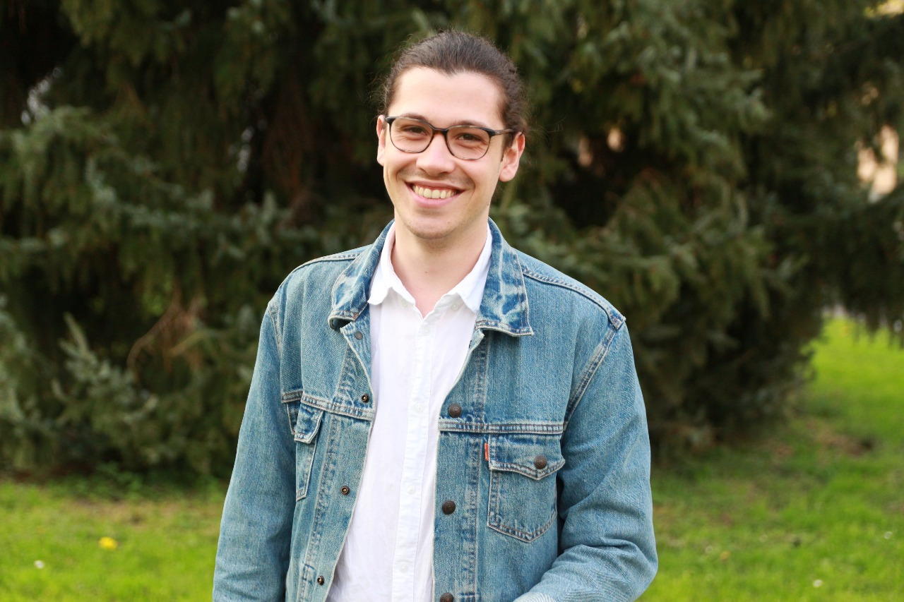
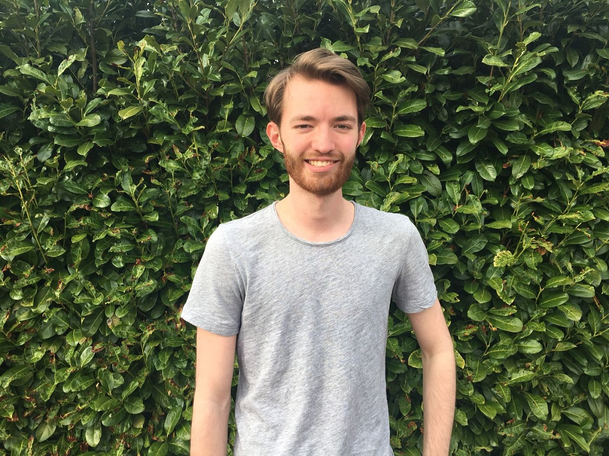

Williams Rothvoss-Buchheimer (Uni Heidelberg)
Hauptorganisator, Webmaster und Dozent
Studiert an der Universität Heidelberg hauptsächlich Germanistik und Anglistik, mit kleineren und größeren Ausflügen in die Informatik, Philosophie und Psychologie. Fächerübergreifende Kerninteressen stellen psychologische Phänomene in verschiedenen Ausdrucksformen - literarisch, textlich, bildlich, filmisch, musikalisch – dar, die besonders, mit Ausgangspunkt im bereits Erforschten über die literarischen Moderne (deutsch, englisch, japanisch) und der Narratologie, komparatistisch bearbeitet werden. In Germanistik und Anglistik sind es besonders narratologische Interessen, die den Studienverlauf neben dem psychologischen Fokus bestimmen; das Überthema der ersten Vorlesungsreihe im Sommersemester 2018 lässt sich aus diesem thematischen Interesse ableiten. Neben den aufgelisteten akademischen Interessenfeldern setzt sich der Student vermehrt mit Weltliteratur, besonders französischer, japanischer und russischer auseinander, um sich nicht nur von ein oder zwei ‚Literaturen‘ ein Bild zu machen, sondern auch die Weltliteratur als Quelle für neues Wissen zu untersuchen.

Lukas Schutzbach (Uni Heidelberg)
Organisator, Dozent
Studiert an der Universität Heidelberg in den Fächern Philosophie, Geographie (insb. Sozial- und Humangeographie) und Anglistik (insb. Literatur des 20. und 21. Jhd. und postmoderne Erzähltheorie). Der Schwerpunkt seines hauptsächlich literaturtheoretischen Studieninteresses liegt fächerübergreifend auf der narratologischen und philosophisch-analytischen Konzeption und Performanz kontemporärer Autoren. Zusätzlich zu den gelisteten fachlich-akademischen Interessenfeldern setzt er sich mit der Theorie, Rezeption und Praxis von Musik und Kunst (insb. Pop-Art und postmodernem Primitivismus) auseinander.

Félix Jung (Uni Heidelberg)
Dozent
Die praktische Auseinandersetzung mit visuellen Medien, sowie auch die Verfolgung einer musikalischen Karriere, stehen für ihn neben dem Studium der europäischen Kunstgeschichte hauptsächlich im Vordergrund. Innerhalb der Vorlesungsreihe wird er auch aus eigenen Projekten Auszüge vorstellen und Erfahrungen teilen.
Einblicke in seine Arbeiten sind über Instagram möglich: www.instagram.com/earth.walk/

Dominique Dumont (Uni Luxemburg)
Dozent
Studiert Psychologie an der Universität Luxemburg, für ein Semester auch an der Universität Zürich, mit Schwerpunkten in der Biopsychologie, Theorien der anwendbaren Psychologie im Bereich der Psychotherapeutik, Statistik und Entwicklungspsychologie. Persönliche Interessen stellen fachlich Psychopathologie, Biopsychologie, v.a. Neuropsychologie und differentielle Psychologie, und außerfachlich japanische Literatur und Kultur dar.